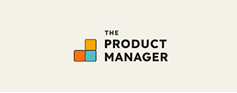

Python Developer/Data Enthusiast
Product-focused tech professional with experience delivering GenAI solutions using AWS (Bedrock, Lambda, EC2), Python, SQL, and RAG pipelines. I’ve contributed to end-to-end product development across analytics and cybersecurity domains — including building a multi-agent clinical chatbot and owning Deloitte’s CTF platform deployed across U.S. universities. Skilled in user research, product architecture, and roadmap planning, with a focus on creating scalable, user-centric solutions.
Experience
Education
Resume
Contact

Skills :
Product Strategy, User/Market Research, GTM
With hands-on experience leading both enterprise AI initiatives and fast-paced hackathon products, I bring a strong mix of strategic thinking and execution to product development. I’ve conducted over 15+ discovery interviews and current-state assessments for Gen-AI use cases at Biogen, translating complex business needs into product blueprints, system architectures, and actionable roadmaps.
As the product owner for Deloitte’s CyberHackathon platform, I led the end-to-end lifecycle from ideation to GTM strategy—crafting 30+ Python-based challenges, analyzing user personas, and refining the product based on real-time feedback. I thrive at the intersection of user empathy, market insight, and technical feasibility—designing experiences that are both impactful and scalable.
Skills :
AWS : Lambda, EC2, S3, Bedrock
I specialize in building scalable, production-grade applications on AWS—particularly in the generative AI and healthcare space. At Deloitte, I engineered a clinical Gen-AI chatbot using AWS Bedrock, Lambda, and EC2, evolving it from a single-agent prototype into a multi-agent platform delivering real-time insights. My work spans backend architecture, deployment, and experience in designing resilient cloud solutions.
I’ve also led stakeholder demos and played a key role in securing early adoption interest from healthcare clients.
Skills :
Python, SQL, Pandas, ML, NLP, Flask, Django, REST APIs
With strong foundations in Python, SQL, and machine learning, I specialize in building intelligent, data-driven products. I’ve developed end-to-end ML pipelines using algorithms like XGBoost, SVM, KNN, and K-Means, and have also built practical NLP applications involving text classification, semantic similarity, and keyword extraction.
In addition, I have developed and deployed full-stack web applications using Flask and Django, integrating both frontend logic and backend intelligence. My experience spans from building smart data pipelines to delivering functional user-facing interfaces — enabling me to translate complex data problems into real-world software solutions.